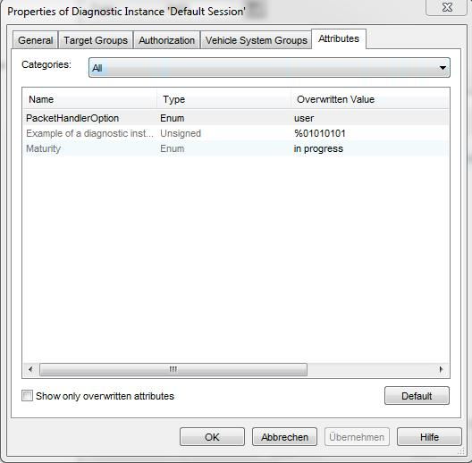

Attributes Property Page
Under Categories you can select the currently displayed attribute category.
Every line of the table contains a single Attribute.
To edit a value, select the cell and press F2.
If you select the option Show only overwritten attributes, the table displays only those attributes that have been overwritten.
Button "Default" drops the overwritten value of the selected attribute, so that the default value from the attribute definition takes effect.